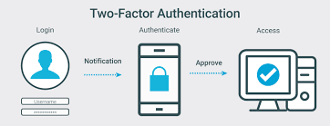

TWO FACTOR AUTHENTICATION
- Version: 2.0
- Author: Shawn Mwitia
- Created: 19 July, 2021
- Update: 26 July, 2021
What is Two Factor Authentication?
2FA is an extra layer of security used to make sure that people trying to gain access to an online account are who they say they are. First, a user will enter their username and a password. Then, instead of immediately gaining access, they will be required to provide another piece of information.
From https://authy.com/what-is-2fa/
Why Do We Need Two Factor Authentication?
As people carry out more of their activities online there is a need to keep one's online accounts secure as more people fall victim to con artists and fraudsters trying to access one's account. This brings about the need for an extra layer of security on one’s account, thus the need for two factor authentication.
How is Two Factor Authentication Implemented?
Two factor authentication can be implemented in three ways:
Using something you know: This could be done by the user entering specific information that only they know eg: personal identification number (PIN), a password, answers to “secret questions” or a specific keystroke pattern.
Using something you have: This is done by the user confirming the access of the account using a trusted device that they own eg: using your mobile phone to confirm that you are accessing your Google account on your laptop.
Using something you are: This is accomplished by using features unique to the user such as a scan of their fingerprint or their voice.
Who Uses Two Factor Authentication?
A large number of companies that operate online use 2 factor authentication to verify their users for example: Amazon, Google and Facebook.
A larger list can be found on https://www.pcmag.com/how-to/two-factor-authentication-who-has-it-and-how-to-set-it-up.